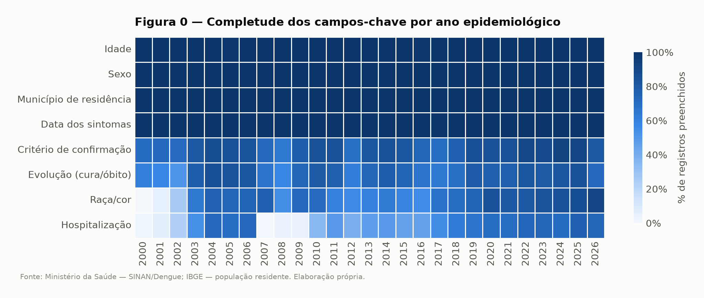

Dengue no Brasil (2000–2026): evolução temporal, expansão geográfica e perfil de gravidade a partir de 26 milhões de notificações do SINAN
Marcelo de Moura Maia Júnior
- Python3.12+
- códigoMIT
- dados e textoCC BY 4.0
- fontesSINAN · IBGE
- período2000–2026
- FAIRF · A · I · R
Resumo
A dengue é a arbovirose de maior impacto no Brasil, e 2024 registrou a maior epidemia da série histórica. Este estudo analisa todas as notificações de dengue do Sistema de Informação de Agravos de Notificação (SINAN) entre 2000 e 2026, combinadas à população residente estimada pelo IBGE, para responder a três perguntas: como a incidência evoluiu e se distribui ao longo do ano, como os casos se distribuem e se deslocaram pelo território e como idade, sexo e sorotipo se relacionam com a gravidade. Um pipeline reprodutível em Python leu 32,5 milhões de registros publicados em quatro leiautes diferentes, padronizou códigos, tratou datas e idades inconsistentes com registro de cada remoção e resultou em 26,4 milhões de casos prováveis. A incidência de 2024, de 3.088 casos por 100 mil habitantes, foi 3,8 vezes o recorde anterior e o único valor atípico da série, embora o pico tenha ocorrido na janela sazonal habitual, entre fevereiro e maio. A participação da Região Sul passou de 0,3% dos casos do país em 2004 para 29,4% em 2020, e a concentração dos casos entre municípios, medida pelo índice de Gini, caiu de 0,89 para 0,62. O risco de óbito de pessoas com 80 anos ou mais foi 56 vezes o de adultos de 20 a 29 anos, e o sorotipo DENV-3 voltou a circular a partir de 2025. Os resultados reforçam a importância da vigilância contínua, da atenção prioritária aos idosos e do monitoramento laboratorial dos sorotipos.
Palavras-chave: dengue; vigilância epidemiológica; SINAN; análise exploratória de dados; ciência aberta.
1. Introdução
A dengue é uma doença viral transmitida principalmente pelo mosquito Aedes aegypti e causada por quatro sorotipos distintos (DENV-1 a DENV-4). A infecção por um sorotipo protege de forma duradoura apenas contra ele mesmo, e uma segunda infecção por sorotipo diferente aumenta o risco de formas graves (WORLD HEALTH ORGANIZATION, 2009). No Brasil, a doença é de notificação compulsória, e cada caso suspeito atendido em um serviço de saúde deve ser registrado no Sistema de Informação de Agravos de Notificação (SINAN), cujos microdados são publicados no Portal de Dados Abertos do SUS (BRASIL, 2026).
O ano de 2024 registrou a maior epidemia de dengue da história do país, com mais de 6,5 milhões de casos prováveis, e a doença tem atingido com frequência crescente áreas antes pouco afetadas, como a Região Sul — movimento associado na literatura à urbanização e a mudanças nas condições climáticas (BARCELLOS; LOWE, 2014). Compreender como essa carga se distribui no tempo, no espaço e entre grupos da população é essencial para o planejamento da vigilância, da assistência e das ações de controle do vetor.
A mera publicação dos dados, porém, não garante seu uso: os arquivos do SINAN somam cerca de 8 GB, foram publicados em quatro leiautes diferentes desde 2000 e trazem códigos, datas e idades em formatos que exigem tratamento cuidadoso. Este trabalho constrói um pipeline reprodutível em Python, alinhado aos princípios FAIR de dados científicos (WILKINSON et al., 2016), e o utiliza para responder a três perguntas de pesquisa:
- RQ1 — Tempo: como a incidência de dengue evoluiu entre 2000 e 2026, qual é o padrão sazonal ao longo do ano e em que medida a epidemia de 2024 se afasta do comportamento histórico?
- RQ2 — Espaço: como os casos se distribuem entre regiões, estados e municípios, quão concentrada é essa distribuição e houve expansão para áreas antes pouco afetadas?
- RQ3 — Pessoas e gravidade: como idade e sexo se relacionam com a ocorrência, a hospitalização, a gravidade e o óbito, e quais sorotipos circularam no período?
2. Metodologia e pipeline de dados
2.1 Fontes e granularidade
A fonte primária são os 27 arquivos anuais de notificações de dengue do SINAN (2000 a 2026), em formato CSV compactado, com uma linha por notificação individual de caso suspeito (BRASIL, 2026). Os dados de 2026 vão até a data de extração (novembro de 2026) e são tratados como parciais. Como denominador das taxas, usa-se a população residente do IBGE por unidade da federação (UF) e por município: censos de 2000, 2010 e 2022 e estimativas anuais para os demais anos (IBGE, 2026a). A malha geográfica das UFs, usada no mapa, vem da API de Malhas do IBGE (IBGE, 2026b). Todas as fontes são públicas e acessadas sem cadastro, por meio do script src/download.py.
2.2 Leitura e padronização
O SINAN usou quatro leiautes de arquivo no período, com 63 a 121 colunas: até 2006, por exemplo, a classificação final se chamava CON_CLASSI, a UF era gravada como sigla e a idade usava letras para indicar a unidade (A046 = 46 anos); nos arquivos de 2008 e 2012 os códigos aparecem com sufixo decimal (4025.0). O módulo src/etl.py lê cada arquivo em blocos de 32 MB diretamente do ZIP, apenas com as 13 a 15 colunas necessárias e sempre como texto, para que nenhum código com zero à esquerda ou letra seja alterado por inferência automática de tipos. Em seguida, os nomes de colunas são padronizados entre os quatro leiautes e os códigos são decodificados em categorias legíveis. O dicionário completo está em data/data_dictionary.md.
2.3 Limpeza, definições e rastreabilidade
Seguindo as definições usadas pelo Ministério da Saúde em seus boletins epidemiológicos, a unidade de análise é o caso provável: todo caso notificado, exceto os descartados e os reclassificados como chikungunya. É caso grave o caso classificado como dengue com sinais de alarme ou dengue grave (BRASIL, 2024), ou seus equivalentes anteriores a 2014, confirmado por critério laboratorial ou clínico-epidemiológico, e é óbito a evolução "óbito pelo agravo" com o mesmo critério de confirmação. As demais regras são:
- Duplicidades marcadas pelo próprio SINAN são removidas.
- Datas inválidas ou fora do período tornam-se ausentes. A data dos primeiros sintomas, quando ausente, posterior à notificação ou mais de 365 dias anterior a ela, é substituída pela data de notificação, e o registro é marcado como imputado (31.915 registros, 0,1% do total).
- Semana epidemiológica é recalculada a partir da data dos sintomas (semanas de domingo a sábado; a semana 1 contém o dia 4 de janeiro) e coincide com a semana gravada pelo SINAN em 99,9% dos registros.
- Idade é convertida de código para anos; idades inválidas ou acima de 110 anos tornam-se ausentes (0,1% dos registros).
- Códigos fora do dicionário são agrupados como "ignorado", em vez de descartados.
- População dos anos sem dado do IBGE (2007 e 2023) é obtida por interpolação linear e sinalizada.
Nenhuma linha é removida sem registro: o arquivo data/processed/etl_log.csv contabiliza, para cada arquivo anual, as linhas lidas, removidas por motivo, corrigidas e mantidas. A Tabela 1 resume o fluxo.
| Etapa | Registros |
|---|---|
| Notificações lidas dos arquivos brutos | 32.512.002 |
| (−) Duplicidades | 430 |
| (−) Casos descartados | 6.146.531 |
| (−) Sintomas fora do período (anos epidemiológicos anteriores a 2000) | 102 |
| Casos prováveis analisados | 26.364.939 |
Alguns arquivos anuais já são publicados sem os casos descartados; por isso a análise usa sempre casos prováveis, definição comparável entre todos os anos. O trecho a seguir, extraído de src/etl.py, mostra como as remoções são contabilizadas e como as datas de sintomas implausíveis são tratadas:
duplicated = (clean_code(raw["duplicidade"]) == "2").fillna(False).astype(bool)
quality["removidos_duplicidade"] += int(duplicated.sum())
raw = raw.loc[~duplicated]
classification = decode(raw["classificacao"], CLASSIFICATION, default="em_investigacao")
excluded = classification.isin(EXCLUDED_CLASSES)
quality["removidos_descartados"] += int((classification == "descartado").sum())
quality["removidos_chikungunya"] += int((classification == "chikungunya").sum())
raw = raw.loc[~excluded]
delay = (records["dt_notificacao"] - onset).dt.days
implausible = onset.notna() & records["dt_notificacao"].notna() & ~delay.between(0, MAX_NOTIFICATION_DELAY_DAYS)
onset = onset.mask(implausible)
imputed = onset.isna() & records["dt_notificacao"].notna()
records["dt_sintomas"] = onset.fillna(records["dt_notificacao"])Trecho da função transform em src/etl.py.
A idade, gravada pelo SINAN como um código de quatro caracteres em que o primeiro indica a unidade (hora, dia, mês ou ano), é decodificada de forma vetorizada, com o ano de nascimento como alternativa quando o código é inválido:
codes = clean_code(age_code).str.upper()
codes = codes.where(codes.str.fullmatch(r"[1-4HDMA]\d{3}", na=False))
unit = codes.str.slice(0, 1).replace(LEGACY_AGE_UNITS)
value = pd.to_numeric(codes.str.slice(1), errors="coerce")
divisor = unit.map(AGE_UNIT_DIVISORS).astype("float64")
age = value.astype("float64") / divisor
birth = pd.to_numeric(clean_code(birth_year), errors="coerce")
from_birth = reference_year.astype("float64") - birth.astype("float64")
age = age.fillna(from_birth)
return age.where(age.between(0, MAX_AGE_YEARS)).astype("float32")Função decode_age em src/etl.py.
Os registros tratados são gravados por ano em Apache Parquet (data/processed/registros/), e sete tabelas agregadas — por semana e UF, por ano e UF, por ano e município, por perfil demográfico, por raça/cor, por sorotipo e de completude — são gravadas em Parquet e em CSV compactado (.csv.gz). O processamento completo leva poucos minutos em um computador comum e usa memória limitada, porque os arquivos nunca são carregados inteiros.
2.4 Métricas e métodos de análise
A análise exploratória está no notebook notebooks/analise_exploratoria.ipynb, com as funções reutilizáveis em src/metricas.py. As principais medidas são:
- Incidência: casos prováveis por 100 mil habitantes.
- Letalidade: óbitos por 100 casos prováveis. As proporções vêm acompanhadas de intervalo de confiança de 95% pelo método de Wilson (1927), adequado a proporções muito pequenas.
- Valores atípicos: regra do intervalo interquartil de Tukey (1977) e escore-z modificado, baseado na mediana e no desvio absoluto mediano (IGLEWICZ; HOAGLIN, 1993).
- Canal endêmico: quartis da incidência semanal em anos de referência, a ferramenta usada pela vigilância para identificar semanas acima do esperado (BORTMAN, 1999).
- Concentração: curva de Lorenz e índice de Gini dos casos em relação à população municipal, incluindo com valor zero os municípios sem casos.
- Correlações e testes: coeficiente de Spearman, tau de Kendall e teste qui-quadrado, escolhidos por não exigirem distribuição normal.
ordem = np.argsort(valores / pesos, kind="stable")
pop_acumulada = np.concatenate([[0.0], np.cumsum(pesos[ordem]) / pesos.sum()])
valor_acumulado = np.concatenate([[0.0], np.cumsum(valores[ordem]) / valores.sum()])
curva = curva_lorenz(valores, pesos)
area = np.trapezoid(curva["valor_acumulado"], curva["pop_acumulada"])
return float(1 - 2 * area)Trechos das funções curva_lorenz e gini em src/metricas.py.
A qualidade do preenchimento varia muito ao longo de 27 anos (Figura 0). Idade, sexo, município e data dos sintomas estão praticamente completos em todo o período. Já a hospitalização chega a cerca de 70% de preenchimento entre 2004 e 2006, cai para menos de 5% entre 2007 e 2009, na transição para o SINAN Net, e só volta a superar 30% a partir de 2010; raça/cor oscila entre 55% e 91% desde 2003. Por isso, a proporção de hospitalizados usa como denominador apenas os registros com o campo preenchido, e a análise de perfil (RQ3) se concentra em 2014–2025, período com a classificação de casos atual.

© 2026 Marcelo de Moura Maia Júnior. Texto e figuras sob licença CC BY 4.0; código sob licença MIT.